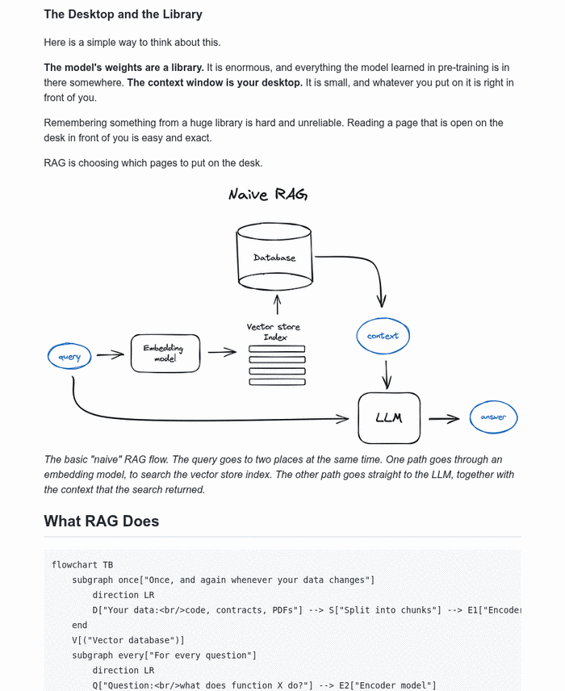
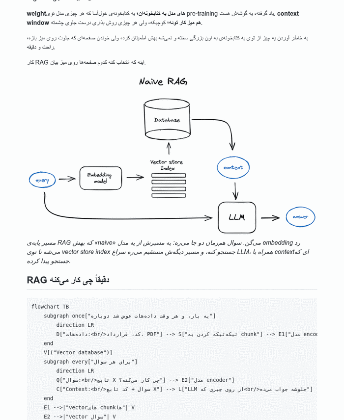
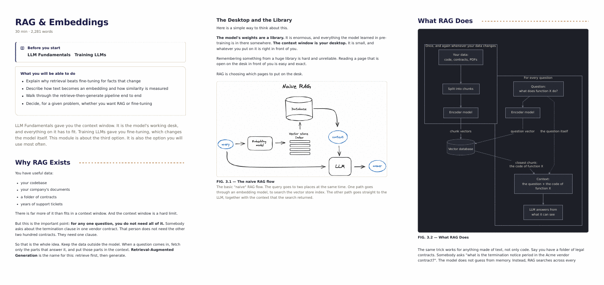
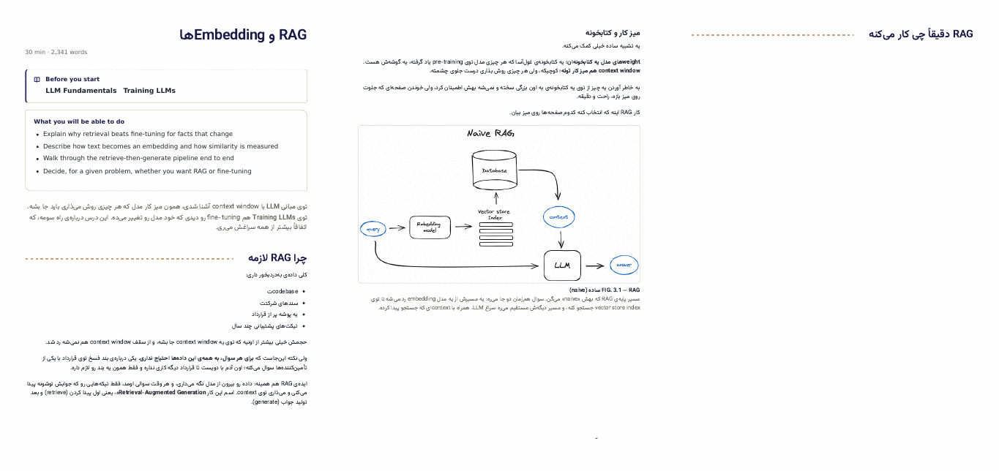
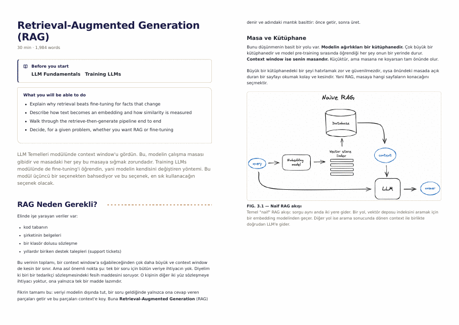
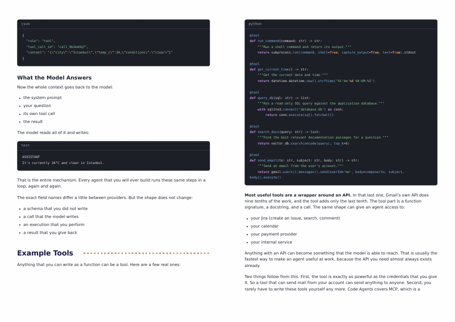
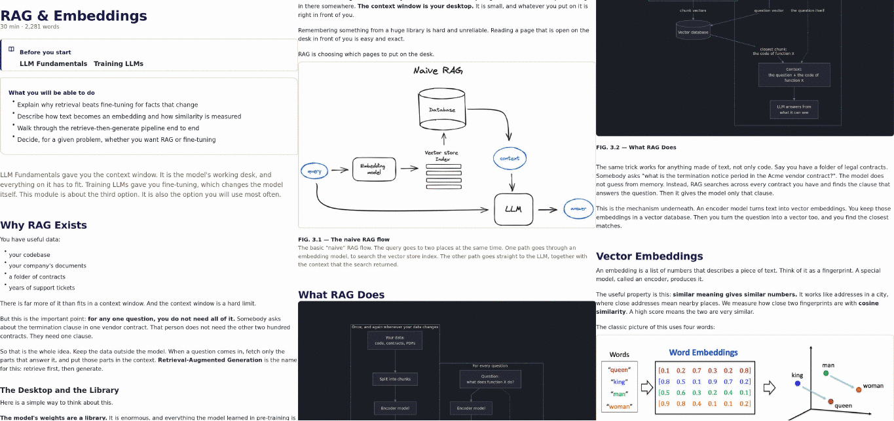
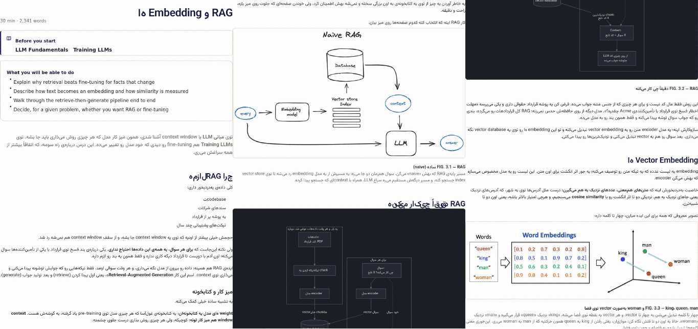
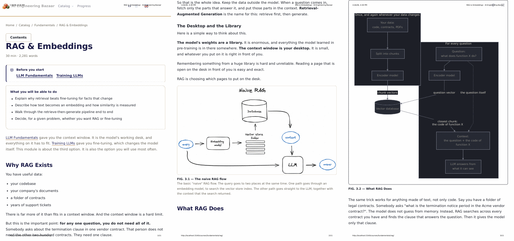
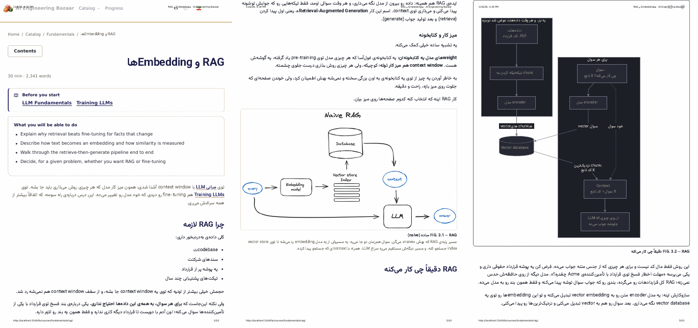

How are the download files made, on a site with no server?
The site is a static export served by GitHub Pages: nothing runs on the host when a reader presses Download, so a file is either made ahead of time, when the site is built, or made in the reader's browser. This page puts both choices to the author for each format, with a real sample from the real course behind every option: Markdown as a zip in Q1 and Q2, PDF in Q3, Q4 and Q5. The modal and the buttons are on page P.
- Facts What the course weighs
- Q1 Markdown, prebuilt
- Q2 Markdown, zipped in the browser · Recommended
- Q3 PDF, prebuilt
- Q4 PDF, drawn in the browser
- Q5 PDF, the browser's print
- N Naming a file that mixes the tracks
- Table Side by side
- Pick Recommendation
- Everything below was measured on this machine from a build of this branch (npm run build, 182 pages, 16.6 s wall time), with Chrome driven by Playwright. Sizes are exact. Times are from one run of each and are not GitHub Actions times. Browser timings used a local server, so they leave out network time: the bytes a reader would fetch are given instead.
- Only written modules are made into files, never a draft: 19 modules, in English, Turkish and Persian, in the For Engineers track. No For Everyone module is written yet, so where this page gives a figure for both tracks it is the For Engineers figure doubled, and says so.
- The site has no print stylesheet today (the only print rule hides one element of the progress export). The PDF samples use a 25-line stylesheet written for this page, shown under Q3; building the download means shipping something like it.
Facts What the course weighs
Three facts decide most of what follows. The images are photographs and screenshots, not SVG: 44 files, 29.2 MB, shared by all three languages. A module's figures are mostly Mermaid, which is text in the Markdown and is drawn by the browser on the site. And the 98 MB site is already a tenth of what GitHub Pages allows.
- The two biggest costs of any option are the images and how many times each option stores them. A 2.9 MB photograph that appears in three languages, in a module file, in a level file and in a whole-course file is stored nine times.
- D87 says figures will be drawn as SVG from now on, which will shrink every number below that comes from images. None of the 44 image files is an SVG today.
| What | Measured | Where it comes from |
|---|---|---|
| The built site, out/ | 1,234 files, 97,974,259 bytes | after npm run build, wall time 16.6 s |
| Written modules | 19 of 38 (8 + 7 + 0 + 4 + 0 by level) | curriculum.yaml; every written module has English, Turkish and Persian |
| Markdown text, written modules | 295,880 + 322,457 + 430,846 bytes | English + Turkish + Persian, 19 files each, 1,049,183 bytes in all |
| Images | 44 files, 29,232,736 bytes | 28 PNG, 16 JPEG; the largest is 2.9 MB |
| Mermaid diagrams | 42 per language in written modules | 83 fenced blocks per language in all: 42 Mermaid, the rest code |
| Level sizes, English, as Markdown plus its images | Fundamentals 11.6 MB, Intermediate 17.6 MB, Ecosystem 16 KB | zips made for Q1 (Ecosystem has no images) |
Q1 Markdown, prebuilt at build time
A build step reads curriculum.yaml and writes one zip per module, per level and for the whole course, in each language and track, into out/. Each zip holds the .md files in the course's own folder layout and the images they point at, so every relative link resolves. The modal's Download is then a plain link to a file that already exists.
- The reader's device does nothing. The file is the same for everybody and can be checked once, in CI.
- Only the combinations that were built exist. A reader who ticks modules 1, 3 and 9 gets nothing prebuilt, so the modal could offer only whole modules, whole levels and the whole course, or fall back to Q2 for anything else.
- It stores every image once per zip: 69 zips weigh 275.6 MB for the For Engineers track alone, which is the largest single cost on this page (chart under Pick).
- Built in 1.0 s: the 69 zips took 976 ms with fflate in Node.




What was built and checked
| Measured | Value |
|---|---|
| Zips written (57 modules, 9 levels, 3 whole-course; English, Turkish, Persian) | 69 |
| Total size of the 69 zips | 275,648,022 bytes (275.6 MB) |
| module zips / level zips / whole-course zips | 100.2 MB / 87.7 MB / 87.7 MB |
| Fundamentals, English: size, entries | 11.64 MB, 26 entries (8 .md, 17 images, one README) |
| Whole course, English | 29.23 MB, 63 entries |
| Relative links and images checked inside the zips | 721 links, 405 images, 0 dangling |
| Links to modules that are not in the zip | rewritten to the live page, for example https://ai-bazaar.lokum.dev/courses/intermediate/security/ (14 in the Fundamentals zip) |
| Files this adds to the site, For Engineers only | 69; for both tracks, 264 at full build-out (228 modules + 30 levels + 6 whole-course) |
Q2 Markdown, zipped in the browser Recommended
The build copies each written .md file into out/ (the images are already there, in course-images/). When the reader presses Download, the browser fetches the chosen files and the images they use, and packs them with fflate (12.6 KB gzipped). The zip is the same bytes Q1 would have built.
Recommended: any selection works, so the modal never has to say "this combination is not available", and it adds 1 MB to the site instead of 276 MB.
- Adds 57 small files (1,049,183 bytes in all) for the For Engineers track. No build time, no extra storage for images.
- The reader fetches the images again unless they are cached: 11.6 MB for the Fundamentals level. A reader who read the modules already has most of them in the cache.
- Needs the preparing state from page P for a level or more: the eight Fundamentals modules together are 11.6 MB, and the reader's device does the work.
- JSZip does the same job, 28 KB gzipped, but took 8 to 17 times longer (table below); fflate is the better choice.
| Measured in Chrome, local server | fflate | JSZip |
|---|---|---|
| Library, minified and gzipped | 12.6 KB | 28.4 KB |
| Fundamentals, English: pack 8 modules and 17 images | 68 ms (first run), 78 ms (cached images) | 650 ms, 596 ms |
| Intermediate, English: 7 modules, 26 images | 72 ms, 74 ms | 1,257 ms, 911 ms |
| Fundamentals, Persian | 45 ms, 37 ms | 566 ms, 540 ms |
| All 19 written modules, English, three levels in a row | 207 ms, including fetching | not run |
| Result: Fundamentals, English, zip size | 11,635,439 bytes | 9,849,419 bytes (it also compresses the images) |
| Heap in use after packing | 30 to 77 MB | 38 to 114 MB |
| Bytes the reader fetches for Fundamentals | 11,683,416 (the images are 11.6 MB of it) | |
The sample: a Persian Fundamentals zip made in the browser
Q3 PDF, prebuilt with headless Chrome Recommended
After next build, a script opens each built module page in headless Chrome (Playwright is already a dev dependency and the e2e job already installs Chrome), waits for the Mermaid diagrams, and prints it to PDF with the site's print styles. Chrome lays the page out, so the PDF is what the site looks like, as text.
Recommended, for the module files only: it is the only option that makes a PDF with real text, vector diagrams and highlighted code in all three languages, and it is already tested at this scale. Levels and the whole course are not prebuilt: the browser joins the module PDFs (pdf-lib, 207 KB gzipped; Fundamentals in 0.26 s, the whole English course in 0.6 s).
- Adds about 47 s to CI for the For Engineers track if the three languages run one after the other (14.9 s, 15.0 s and 16.9 s; the last two ran at the same time), and about twice that when For Everyone is written. Joining levels in advance would add 4.7 s more but 226 MB of files.
- Adds 115 MB of module PDFs for the For Engineers track (57 files). Prebuilding the level and whole-course PDFs as well would make it 342 MB (chart under Pick).
- Needs one thing that does not exist: a print stylesheet. The samples used the one below. The Persian font is the site's own Vazirmatn web font, so the CI machine's fonts do not matter.
- The PDF is bigger than the Markdown because every PDF carries its own copy of the images, and each Persian PDF is about 1.2 times its English one.








| Measured, Chrome 1 page at a time | English | Turkish | Persian |
|---|---|---|---|
| Time to make 19 module PDFs | 14.9 s | 15.0 s | 16.9 s |
| Per module, shortest to longest | 0.53 to 0.99 s | 0.54 to 1.01 s | 0.59 to 1.21 s |
| Size of the 19 module PDFs | 35.9 MB | 36.0 MB | 43.6 MB |
| One module, median / largest | 784 KB / 8.3 MB | 792 KB / 8.3 MB | 1.3 MB / 8.8 MB |
| RAG module: pages, size | 10 pages, 336 KB | 10 pages, 341 KB | 11 pages, 776 KB |
| Fundamentals joined: pages, size | 70 pages, 16.7 MB | 72 pages, 16.7 MB | 70 pages, 19.4 MB |
| Intermediate joined | 90 pages, 18.4 MB | 93 pages, 18.4 MB | 84 pages, 21.4 MB |
| Whole course joined | 180 pages, 35.4 MB | 186 pages, 35.5 MB | 174 pages, 42.1 MB |
| Join in the browser (pdf-lib), whole course | 0.57 s, heap 101 MB | not run | 2.7 s, heap 170 MB |
The print stylesheet the samples used
@page { size: A4; margin: 18mm 16mm 20mm; }
html, body { background: #fff !important; }
.bz-bar, .bz-band, .bz-rail, .bz-rail-tab, .bz-pager, .bz-complete, .bz-quiz, .skip-link,
.bz-drawer-bar, .bz-aside, .bz-crumb, .bz-figure-tools, .bz-slab-tools, footer { display: none !important; }
.bz-shell, .bz-main, .bz-col, .bz-sheet { display: block !important; max-width: none !important; padding: 0 !important; }
.bz-prose { font-size: 10.5pt !important; line-height: 1.55 !important; }
.bz-prose h2, .bz-prose h3 { break-after: avoid; }
.bz-prose pre, .bz-slab-code, .bz-slab { white-space: pre-wrap !important; break-inside: avoid; font-size: 8.5pt !important; }
.bz-figure, .bz-figure-body, .bz-fig, .bz-image { overflow: visible !important; break-inside: avoid; }
.bz-figure svg { max-width: 100% !important; width: 100% !important; height: auto !important; max-height: 150mm; }
.bz-prose img { max-width: 100% !important; height: auto !important; break-inside: avoid; }
a { color: inherit !important; text-decoration: none !important; }
Q4 PDF, drawn in the reader's browser
The page's own DOM is drawn onto a canvas with html2canvas (45.6 KB gzipped), cut into A4 slices, and each slice is placed in a PDF with jsPDF (132 KB gzipped). Nothing is built ahead and nothing is added to the site. This is the sample: RAG in English and in Persian, at 1.5 times scale, JPEG quality 0.82.
- Zero build time and zero files added, which is its whole appeal.
- The PDF is a stack of pictures. It cannot be searched, selected or copied (pdftotext found 9 characters in the 9-page English PDF), and a screen reader gets nothing.
- Slices cut pages at fixed heights, so figures and lines of text are cut in two (the flowchart on pages 2 and 3 below).
- The Persian heading came out wrong: html2canvas draws text with letter-spacing letter by letter, and the site's headings have negative tracking, which breaks Persian's joined letters. Body text came out right.
- For a level, every module is drawn one after another: 7.3 s, 59 pages and 11.6 MB for Fundamentals in English, on a desktop. The longest module, Prompt Engineering, made a canvas 22,344 pixels tall; browsers differ in how tall a canvas may be, and this was only run in Chrome.




| Measured, Chrome | Value |
|---|---|
| RAG, English: time, size, pages | 1.49 s, 1,652,582 bytes, 9 pages |
| RAG, Persian | 1.54 s, 1,390,053 bytes, 8 pages |
| Prompt Engineering, English (the longest) | 1.42 s, 3,052,785 bytes, 15 pages |
| Fundamentals, English, 8 modules | 7.3 s, 11,565,641 bytes, 59 pages |
| Heap in use after one module | 40 to 50 MB |
Q5 PDF, the browser's own print
The button calls window.print() on the module page (or on a print page that joins chosen modules) and the reader chooses Save as PDF in the browser's dialog. There is nothing to build or store, and the PDF is made by the same print engine as Q3. The sample is what the module page prints today, with the browser's default settings: headers and footers on, background graphics off, and no print stylesheet.
- Costs nothing in build time or storage, and gives real text and correct Persian, because it is the same engine as Q3.
- The reader is in charge of the result, and the defaults are poor: the browser's date, address and page-number lines overlap the text, background graphics are off, so the dark panels turn white and the diagrams' light text nearly disappears, and the site's navigation prints.
- A print stylesheet fixes most of that, including a rule that asks browsers to print backgrounds (print-color-adjust: exact), but the dialog's header and footer lines are still the reader's setting.
- It is one page at a time: a download of three chosen modules needs a print page that assembles them, and a level needs the browser to lay out 70 pages at once.
- It is not a download in the sense the author described: there is no file name, no progress, and no "PDF or Markdown" step; the modal would become an explanation of the print dialog.




| Measured, Chrome print defaults | English | Persian |
|---|---|---|
| RAG: pages, size | 11 pages, 397,283 bytes | 10 pages, 834,258 bytes |
| Build time, files added to the site | none | |
N How a file that mixes the two tracks is named
When the reader picks Both under Track, one download holds a For Engineers and a For Everyone version of every chosen module. The course already stores them side by side: <level>/<name>.md and <level>/everyone/<name>.md, with the same names and the same _tr and _fa suffixes. No For Everyone file exists yet, so the "everyone" lines in the trees below are what a build would produce, not files that can be opened today.
Recommended: N1. It copies the layout the author already uses, so the files need no renaming and no link changes, and a reader can drop the zip into the repository's layout.
- Every file name carries its track when it is a single track (...-engineers.zip, ...-everyone.pdf), so two downloads never overwrite one another in a Downloads folder.
- The name pattern is ai-bazaar-<what>-<language>-<track>.<zip or pdf>, where what is a module (fundamentals-rag), a level (fundamentals), course or selection. These are the names the modal on page P shows before a download.
N1 · The track is a folder, the layout is the repository's
A reader who opens one file sees a plain rag.md; which track it is comes from the folder. Relative links between modules of the same track keep working because they are the repository's own.
N2 · The track is part of the file name
A file out of context says which track it is. But the names differ from the repository's, and every link between modules must be rewritten per track (training.md becomes training.everyone.md inside the everyone files).
N3 · Never mix
The Track control offers one track at a time, and a reader who wants both downloads twice. Every file is the single-track file from Q1 to Q3 and nothing needs a mixed name. The modal is simpler, and P's "Both" option disappears. The cost is the reader's: two downloads, two zips to merge by hand.
Table Side by side
All figures are for the For Engineers track, English, Turkish and Persian, 19 written modules, measured above. The row "Both tracks, projected" doubles the figure for today's 19 written modules and is an estimate until a For Everyone module exists; the full build-out of 38 modules in two tracks and three languages is 264 files per format (228 modules, 30 levels, 6 whole-course), and its size is not known until those modules are written.
| Q1 Markdown, prebuilt | Q2 Markdown, zipped in the browser | Q3 PDF, prebuilt | Q4 PDF, drawn in the browser | Q5 PDF, browser print | |
|---|---|---|---|---|---|
| Made by | the build | the reader's browser (fflate) | headless Chrome in CI | the reader's browser (html2canvas, jsPDF) | the reader's browser print dialog |
| CI time added | 1.0 s (69 zips) | 0 | about 47 s one language after another; 4.7 s more to join levels | 0 | 0 |
| Added to the site, today | 69 zips, 276 MB | 57 .md files, 1.0 MB | 57 module PDFs, 115 MB (69 files, 342 MB if levels are prebuilt) | nothing | nothing |
| Both tracks, projected (today's set doubled) | 551 MB, 138 zips | 2.1 MB, 114 files | 231 MB, 114 files (683 MB, 138 files with levels) | nothing | nothing |
| Fundamentals in English | 11.6 MB zip | 11.6 MB zip, made in 68 ms | 16.7 MB, 70 pages | 11.6 MB, 59 pages, 7.3 s | one module at a time |
| Any selection of modules | only the combinations built | yes | yes if the browser joins them (0.3 s for a level) | yes, one module after another | only through a print page that assembles them |
| Figures | images beside the .md; Mermaid stays as source | same | images embedded; Mermaid drawn as vector | pictures | backgrounds lost unless the stylesheet forces them |
| Code highlighting | decided by the reader's viewer | same | kept | kept as pixels | lost unless backgrounds print |
| Persian | the author's text; direction is the viewer's | same | correct: joined, right to left, selectable | body right, headings lose joins | correct, with the browser's header lines |
| Text selectable | yes | yes | yes | no | yes |
| Reader's device | downloads one file | fetches, packs, up to about 77 MB of memory | downloads one file; a joined level up to 170 MB of memory | seconds of work, 40 to 50 MB per module | the dialog |
| Main risk | storage: 276 MB before the second track | a very large zip on a small phone (not tried) | storage and a print stylesheet to write | output quality | the reader's settings |
Pick Recommendation Q2 + Q3 + N1
Markdown is zipped in the browser from the copied .md files and the images already on the site (Q2). PDF is prebuilt for each module with headless Chrome (Q3), and the browser joins the modules of a level or of a chosen set. Files that hold both tracks use the repository's layout (N1).
Why: the only things GitHub Pages cannot absorb are the images stored again and again. Q2 stores them zero extra times and Q3 stores them once per module and language. Everything the reader can choose in the modal then works, with no "not available" combinations.
- Adds, for the For Engineers track: 57 raw .md files (1.0 MB) and 57 PDFs (115.4 MB). Both tracks, projected: about 233 MB.
- Adds to CI: about 47 s for the PDFs, and it rises to about 94 s when the For Everyone track is written. Printing three languages in parallel is likely to cut this to about 17 s; that was not run.
- Ships two small libraries to the reader only when the modal opens: fflate (12.6 KB) and pdf-lib (207 KB), both gzipped.
- Needs a print stylesheet, 25 lines in the sample, and a decision on what a PDF leaves out (the quiz, the contents list).
- If the author prefers PDFs for a level to open at once with no joining wait, prebuild the level PDFs too (Q3 in full): +226 MB for the For Engineers track and about +452 MB with both tracks.
Ask What the author decides here
Three decisions from this page; the other two, the modal and the buttons, are on page P.
- PDF prebuilt or made in the browser: Q3 (prebuilt, with the browser joining modules), Q4 (drawn in the browser) or Q5 (the browser's print). The recommendation is Q3.
- Markdown prebuilt or zipped in the browser: Q1 or Q2. The recommendation is Q2.
- How a file that mixes the two tracks is named: N1, N2 or N3. The recommendation is N1.